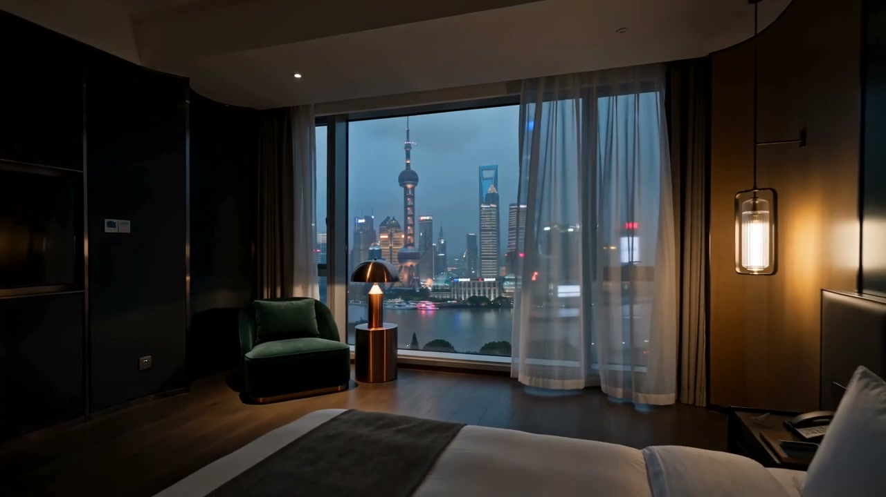
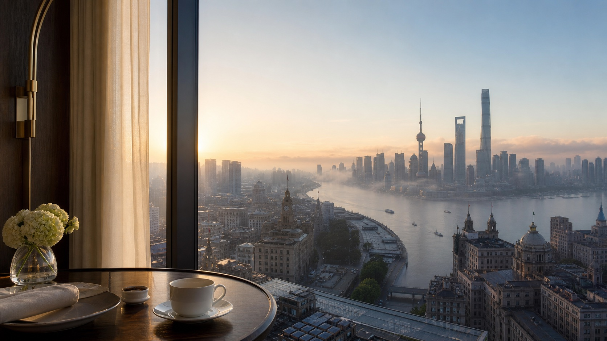
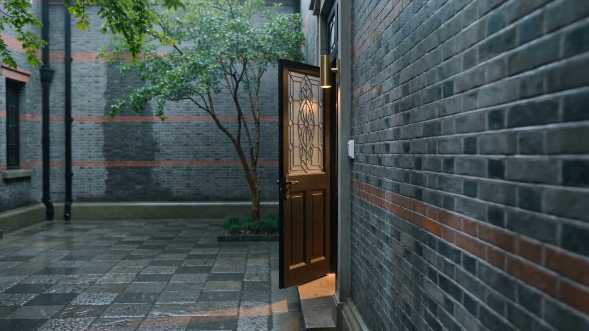
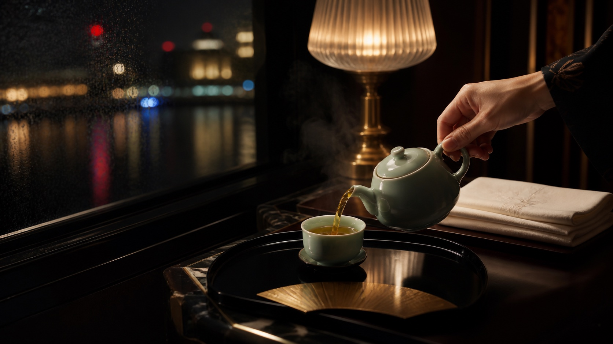
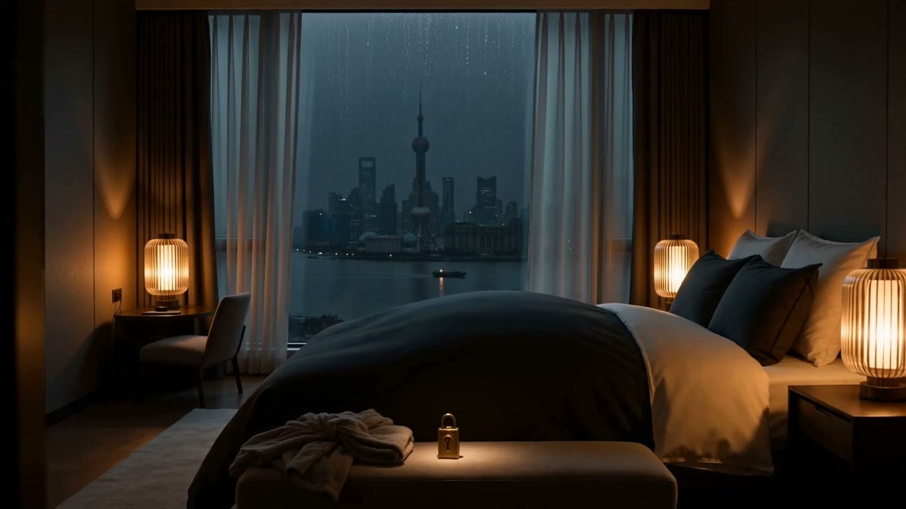

向下，入夜
01 · 与城市同频
不只睡一晚，借一座城的节奏。
高端旅居不是把行程塞满。它把抵达、洗去风尘、看一场雨与醒来的光，重新排成一条属于你的上海时间线。酒店给你开阔的城市视野，民宿让街区走进日常；真正的选择，是此刻想离城市多近。
-
江岸初醒
窗帘先亮，早餐和城市一起醒来。
-
梧桐影长
拐进里弄，雨声把脚步放慢。
-
苏河夜泊
灯光退到玻璃外，只留下房间的呼吸。

住法一 · 江岸高处
云与水，
同时醒来
适合第一次来沪，也适合值得纪念的一晚。把浦江、早餐与一整面清晨留在窗前，城市很近，房间仍然安静。
看看它是否适合你
住法二 · 里弄私宅
转进里弄，
住进一方安静
“今晚，不赶路。”
灰砖、梧桐和一扇只为你亮起的门。这里更像住进熟悉的上海朋友家：没有大堂的距离，街角面包店和雨后的石板路就是生活的一部分。
住法三 · 海派客房
把讲究，
藏进一杯热茶
真正的奢华很少高声说话。它是雨夜回房时已经温好的茶，是亚麻、青瓷与黄铜在同一束灯下各自安静，也是服务恰好停在不打扰的位置。
一盏灯，一场雨，一夜上海。

02 · 选一种上海距离
今晚，
你想住在哪里？
不比较虚构价格，只比较你与城市的距离。
为初见上海的人
把城市放在窗前
醒来就看见浦江，适合两晚以上的城市首站。白天向外探索，夜里回到一间有完整服务、也有足够留白的房间。
- 建议节奏：2–3 晚
- 同行方式：双人 / 独行
- 城市距离：开阔但不疏远

私享旅程 · 从一处好住所开始
下一次醒来，
在上海。
告诉我们同行的人、停留的夜晚与偏爱的城市速度。我们会把它整理成一份可继续讨论的住法提案。